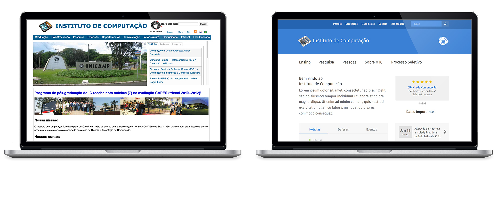
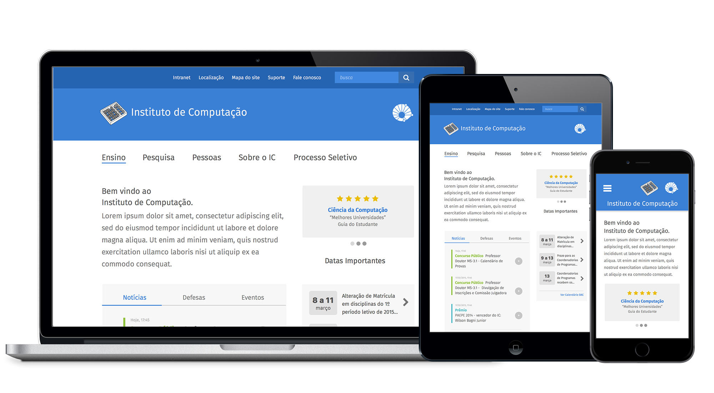

Online Parenting is an iOS app that help parents to protect their children. It synchronizes the son's messages with the fathers' app and if the son receive any innapropriate message, the father will be notified.
 Do you want to hear more about it? Contact me: mariliaferreiraa@gmail.com